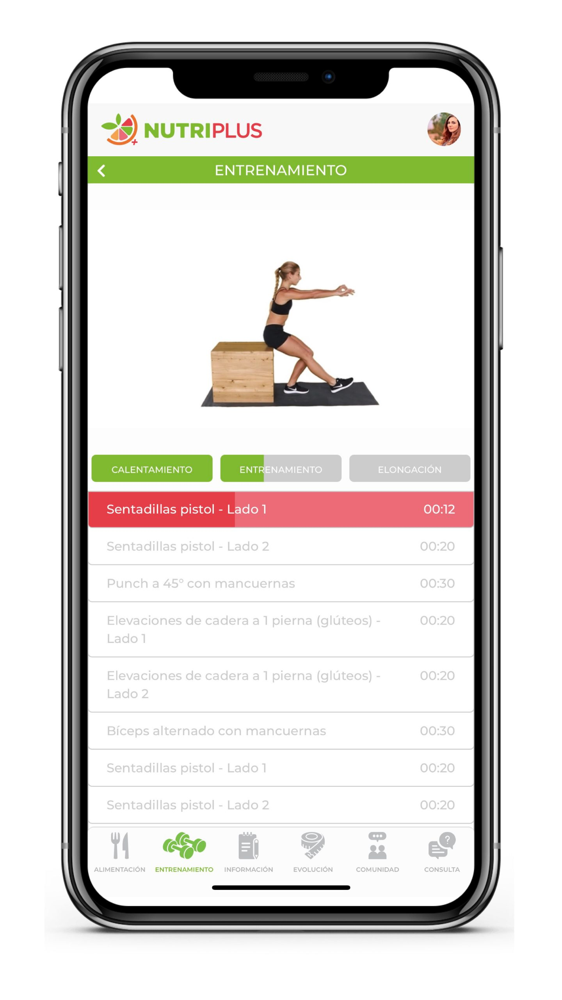

¡Bienvenido/a a NutriPlus!
Te cuento que NutriPlus es una Aplicación de Nutrición, Psicología y Entrenamiento, que desarrollamos junto a mi novio, que es Ingeniero en Sistemas. La idea de la misma es ayudar a gente de todo el mundo a cambiar sus hábitos, brindándoles tanto las herramientas como el acompañamiento que necesite.
Incluye varias secciones, entre ellas; un plan de alimentación (omnívoro / vegetariano / vegano), recetas saludables, información respecto a la alimentación, rutinas de entrenamiento (casa / gimnasio), clases en vivo semanales, información respecto al cambio de hábitos, un registro de evolución, una comunidad para interactuar, y consultas con Licenciados en Nutrición y Psicología.
Si bien las secciones de alimentación y de entrenamiento son de gran ayuda, otros aspectos importantes de la aplicación son que;
Por un lado, a través de la sección de comunidad, vas a poder estar en contacto con otras personas, e incluso con las profesionales del equipo, compartiendo recetas, experiencias, dudas, entre otros.
Por otro lado, a través de la sección de consultas, vas a poder solicitar turnos con las profesionales del equipo, quienes van a poder acceder a toda la información que hayas estado cargando para darte una devolución al respecto.
NutriPlus no se baja desde el centro de descarga de aplicaciones del celular. La única forma de acceder es ingresando a nuestra web. Una vez que te hayas suscripto, vas a recibir un e-mail con los datos para ingresar a la plataforma y vas a poder descargarla. De todas formas, se puede utilizar tanto desde el celular, como desde una tablet o una computadora.
Contamos con 3 planes de suscripción:
El «BÁSICO», que no incluye consultas.
El «REGULAR», que incluye 2 consultas por mes.
El «PREMIUM», que incluye 4 consultas por mes.
Además, contamos con 3 modalidades de suscripción:
La «MENSUAL», sin descuento.
La «TRIMESTRAL», que incluye un 15% de descuento.
La «SEMESTRAL», que incluye un 30% de descuento.En el caso de que tengas alguna consulta, podés mandarnos un mensaje de WhatsApp. A la brevedad nuestro asistente se va a comunicar con vos para enviarte información más detallada y responder todas tus dudas.
En el caso de que tengas alguna consulta, podés mandarnos un mensaje de WhatsApp. A la brevedad nuestro asistente se va a comunicar con vos para enviarte información más detallada y responder todas tus dudas.
